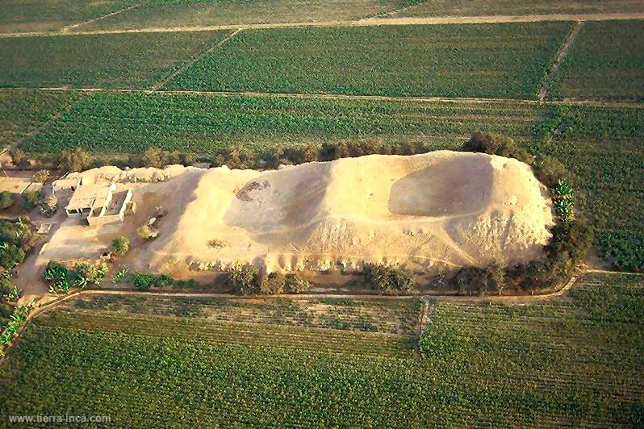
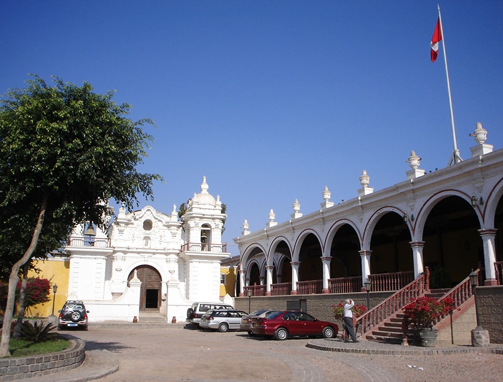
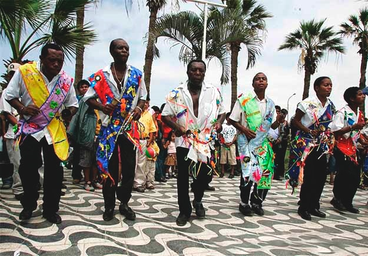
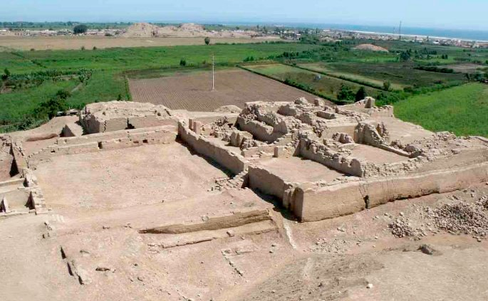
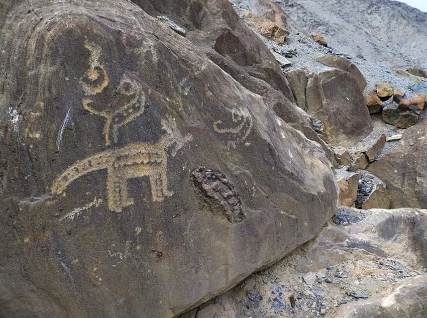
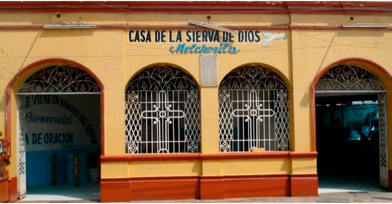

Plaza de Armas de Chincha
La Plaza de Armas de Chincha es ahora parte del patrimonio cultural nacional debido a su valor social.
Complejo arqueologico soto
El Complejo Arqueológico de Soto es uno de los atractivos turísticos de la zona de Chincha Alta.
Hacienda San Jose
Hacienda San José es una de las haciendas más importantes de la costa del Perú.
Distrito del Carmen
Desde un punto de vista histórico y demográfico, la región de El Carmen es muy preciada.
Huaca Centinela
Es el principal asentamiento de Chincha, creció en los valles de la costa del Perú entre los años 900 y 1450 d.C.
Petroglifos de huancor
Las inscripciones de Huancor en la roca fueron realizadas antes de la era cristiana, y sus poderosos rasgos convencen a los historiadores de hoy.
Santuario de melchorita
Melchora Saravia Tasayco, conocida como La Melchorita, devota de la Virgen de Santa Rosa de Lima.